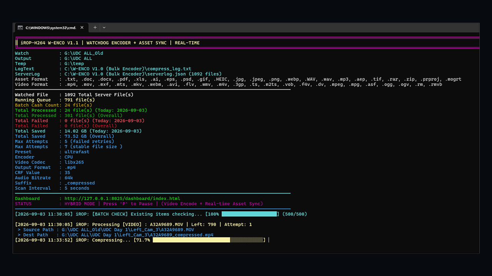

এটি একটি সম্পূর্ণ অটোমেটেড ও ব্যাচ ব্যাকগ্রাউন্ড ভিডিও এনকোডিং ও স্টোরেজ অপ্টিমাইজেশন সিস্টেম। ভিডিও এডিটর/এডিটিং প্রোডাকশন হাউস এবং মিডিয়া এজেন্সি ও ম্যানুয়াল টেলিভিশন সার্ভার এর জিভি ফুটেজ এর শত টেরাবাইট (TB) ভিডিও আর্কাইভ সংরক্ষণের বিশাল খরচ ও জটিলতা দূর করতে এটি তৈরি করা হয়েছে।
সফটওয়্যারটি দৃশ্যমান কোয়ালিটি ঠিক রেখে স্বয়ংক্রিয়ভাবে ভিডিও সাইজকে টেরাবাইট (TB) থেকে গিগাবাইটে (GB) বা মেগাবাইটে (MB) তে নামিয়ে আনে এবং বিশাল পরিমাণ স্টোরেজ স্পেস সাশ্রয় করেতে সক্ষম। পাশাপাশি আপনি এটি আপনার সার্ভারের ড্রাইভের হুবুহ ফোল্ডার ট্রি বাজায় রেখে অটোমেটিক ফাইল ব্যাকআপ করতে সক্ষম।
২. মূল আর্কিটেকচারাল সুবিধাসমূহ
সফটওয়্যারটি সোর্স ফোল্ডারে থাকা সমস্ত সাব-ফোল্ডার ও ফাইলের বিন্যাস অবিকল বজায় রেখে আউটপুট ব্যাকআপ ফোল্ডারে মিরর করে। অর্থাৎ, সোর্স ডিরেক্টরিতে প্রজেক্ট ও ফুটেজ যেভাবে সাজানো থাকবে, কম্প্রেশন শেষে আউটপুট ফোল্ডারেও হুবহু একই ফোল্ডার কাঠামোতে ফাইল সংরক্ষিত হবে। ফলে কোনো ফাইল হারিয়ে যাওয়া বা অগোছালো হওয়ার ঝুঁকি থাকে না।
নির্ধারিত ওয়াচ ফোল্ডারে নতুন কোনো ভিডিও বা ফাইল ড্রপ করা মাত্রই সফটওয়্যারটি ব্যাকগ্রাউন্ডে স্বয়ংক্রিয়ভাবে এনকোডিং এবং ট্রান্সফার প্রক্রিয়া শুরু করে। এর জন্য কোনো প্রকার ম্যানুয়াল ক্লিক বা বাড়তি কমান্ড দেওয়ার প্রয়োজন হয় না; পুরো প্রক্রিয়াটি অটো-পাইলট মোডে পরিচালিত হয়।
সিস্টেমটি কাস্টম প্রিসেট, সার্ভার পোর্ট এবং হার্ডওয়্যার এক্সিলারেশন ফ্ল্যাগ দিয়ে অপ্টিমাইজ করা। ফলে ব্যাকগ্রাউন্ডে প্রসেসিং চলাকালে পিসির কাজের স্বাভাবিক গতি ব্যাহত না করেই অত্যন্ত দ্রুত এবং নির্ভরযোগ্যভাবে হাই-স্পিড ভিডিও রেন্ডারিং সম্পন্ন হয়।
এর মাধ্যমে রিয়েল-টাইমে অ্যাক্টিভ কিউ (Queue), মোট প্রসেস হওয়া ফাইল, ফেইল্ড লগ এবং ঠিক কত গিগাবাইট বা টেরাবাইট মেমোরি সাশ্রয় হলো (যেমন: ৮৮ জিবি+ সেভড) তা সরাসরি মনিটর করা যায়। ফলে প্রজেক্টের স্টোরেজ ব্যবহারের নিখুঁত পরিসংখ্যান এক নজরে পাওয়া সম্ভব হয়।
৩. এনকোডিং কনফিগারেশন ও প্যারামিটার গাইড
ভিডিও এনকোডিংয়ের ক্ষেত্রে সঠিক কোডেক ও CRF মান নির্ধারণ করা অত্যন্ত গুরুত্বপূর্ণ:
H.264 (AVC): এটি একটি সার্বজনীন কোডেক। পুরোনো ও নতুন সমস্ত মোবাইল, টিভি ও ব্রাউজারে এটি সরাসরি প্লেব্যাক সাপোর্ট করে, তবে ফাইলের সাইজ কিছুটা বড় হয়।
H.265 (HEVC): আধুনিক ও অতি-দক্ষ কম্প্রেশন কোডেক। এটি H.264-এর সমান ভিজ্যুয়াল কোয়ালিটি বজায় রেখে ফাইলের সাইজ প্রায় ৫০% কমিয়ে দেয়, যা দীর্ঘমেয়াদী আর্কাইভের জন্য আদর্শ।
CRF (Constant Rate Factor): ফিক্সড বিটরেটের বদলে এটি সামগ্রিক কোয়ালিটি নিয়ন্ত্রণ করে। সাধারণ নিয়মে ১৮ থেকে ২২ মান মাস্টার ফাইলের জন্য এবং ২৬ থেকে ২৮ মান আর্কাইভিংয়ের জন্য উপযুক্ত। সিস্টেমে ডিফল্ট হিসেবে মান ২৮ নির্ধারণ করা থাকে।
কম্প্রেস করা ফাইলের নামের শেষে এক্সটেনশনের আগে একটি নির্দিষ্ট টেক্সট মার্কার যোগ করাকে সাফিক্স বলে (যেমন: _Proxy, _compressed বা _com)। এর মূল সুবিধা হলো—এটি মূল র ফাইলকে ভুলবশত ওভাররাইট হওয়া থেকে রক্ষা করে এবং আউটপুট ফোল্ডারে আসল ফাইল ও অপ্টিমাইজড ফাইলকে সহজেই আলাদা করতে সাহায্য করে।
যদি ওভার রাইট করতে চান বা সেম নামে কনভার্টেড ফাইল চাইলে ড্রপ ডাউন থেকে Blank নির্বাচন করুন।
ওয়াচ ফোল্ডারে নতুন কোনো ফাইল এসেছে কি না, তা ব্যাকগ্রাউন্ড সার্ভিসটি কত সেকেন্ড পর পর চেক করবে—তা স্ক্যান ইন্টারভাল দিয়ে নির্ধারণ করা হয়। দ্রুত ফাইল পাওয়ার জন্য ৫ থেকে ১০ সেকেন্ড, সাধারণ কাজের জন্য আদর্শ ৩০ সেকেন্ড (ডিফল্ট) এবং বড় নেটওয়ার্ক ড্রাইভের ট্রাফিক কমাতে ৬০ থেকে ১২০ সেকেন্ড নির্ধারণ করা যায়।
ফাইল লক, নেটওয়ার্ক ল্যাগ বা ড্রাইভের সাময়িক সমস্যার কারণে কোনো ফাইলের প্রসেসিং আটকে গেলে সিস্টেমটি সাথে সাথে সেটিকে ফেইল্ড হিসেবে বাদ দেয় না। বরং নির্ধারিত রিট্রাই সংখ্যা অনুযায়ী একাধিকবার স্বয়ংক্রিয়ভাবে পুনরায় চেষ্টা করে ফাইলটি সফলভাবে রেন্ডার করার সুযোগ দেয়।
নেটওয়ার্ক ড্রাইভ বা মেমোরি কার্ড থেকে বড় কোনো ভিডিও ফাইল যখন ওয়াচ ফোল্ডারে কপি হতে থাকে, তখন এই ফিচারটি ফাইলের সাইজ বৃদ্ধি বন্ধ হওয়া পর্যন্ত অপেক্ষা করে। অর্থাৎ, পুরো ফাইল সম্পূর্ণ কপি হওয়ার আগে এনকোডার প্রসেসিং শুরু করে না। ফলে অসম্পূর্ণ বা করাপ্ট ভিডিও তৈরির ঝুঁকি শতভাগ দূর হয়।
এনকোডারের মূল ইঞ্জিন FFmpeg আপনার পিসির যেকোনো ড্রাইভে (C বা D ড্রাইভ) রাখা যায়। তবে ফোল্ডারের কাঠামো অবশ্যই ffmpeg/bin/ffmpeg.exe এবং ffmpeg/bin/ffprobe.exe ফরম্যাটে থাকতে হবে। কনফিগারেশনে গিয়ে ব্রাউজ করে সরাসরি এই এক্সিকিউটেবল ফাইল দুটি চিনিয়ে দিলেই সিস্টেমটি কার্যকর হয়।
৪. ট্রাবলশুটিং ও নিরাপত্তা গাইড
উইন্ডোজের পলিসি ব্লকের ক্ষেত্রে নিচের ৩টি ধাপ অনুসরণ করতে হবে:
আনব্লক এক্সিকিউটেবল:ffmpeg.exe এবং ffprobe.exe ফাইলে রাইট-ক্লিক করে Properties-এ যান। নিচে Unblock অপশন থাকলে টিক দিয়ে Apply ও OK চাপুন।
অ্যান্টিভাইরাস এক্সক্লুশন: উইন্ডোজ ডিফেন্ডার বা আপনার অ্যান্টিভাইরাসের Exclusion/Whitelist তালিকায় সম্পূর্ণ প্রজেক্ট ফোল্ডারটি যুক্ত করুন।
Smart App Control বন্ধ করা: উইন্ডোজ সিকিউরিটির App & browser control থেকে Smart App Control settings-এ গিয়ে সাময়িকভাবে এটি Off করে দিন।
ড্যাশবোর্ড কন্ট্রোল ও ইন্টারফেস গাইডলাইন
লাইভ ড্যাশবোর্ডটি একটি ওয়েব-ভিত্তিক কন্ট্রোল প্যানেল, যা ব্যাকগ্রাউন্ডে চলা মূল এনকোডার স্ক্রিপ্টের সমস্ত একটিভিটিস একটি নিজস্ব পাইথন সার্ভারের মাধ্যমে স্বয়ংক্রিয়ভাবে সার্বক্ষনিক ড্রাইভের বর্তমান অবস্থা প্রদর্শন করে। পাইথন সার্ভার চালু থাকলে ওপরের স্ট্যাটাস বাতি সবুজ হয়ে PYTHON SERVER IS LIVE দেখায় এবং যখনই কোনো ফাইল রেন্ডার হতে থাকে, তখন বাতিটি হলুদ বর্ণ ধারণ করে ENCODING ব্লিংক করতে থাকে। স্ক্রিপ্টটি কত সময় ধরে চলছে তা এর Run Time কাউন্টারে রিয়েল-টাইমে গণনা করা হয়।
হেডার কার্ডের ওপরের মেনুটিতে ৫টি গুরুত্বপূর্ণ কন্ট্রোল রয়েছে:
About Encoder: সফটওয়্যারটির পূর্ণাঙ্গ অনলাইন হেল্প ও ডকুমেন্টেশন পেজ ওপেন করে।
Port Editor: এক ক্লিকেই লোকাল সার্ভারের পোর্ট নম্বর (যেমন: 8000, 8005) পরিবর্তন করার ডায়ালগ বক্স খোলে।
Config Editor: স্ক্রিপ্টের প্রধান কনফিগারেশন, প্রজেক্টের নাম, এক্সটেনশন স্ক্যানার এবং ভিডিও/অ্যাসেট ফরম্যাট এডিট করার মাল্টি-ট্যাব প্যানেলটি উন্মুক্ত করে।
Master Pause / Running Button: কাজের মাঝে যেকোনো মুহূর্তে স্ক্রিপ্ট স্থগিত (Pause) করতে এই বাটনটি ব্যবহৃত হয়। পজ করা থাকলে স্ক্রিনের ওপর সতর্কতা ব্যানার প্রদর্শিত হয় এবং চলমান ফাইলটির কাজ শেষ হওয়া পর্যন্ত অপেক্ষা করে স্ক্রিপ্টটি নিরাপদভাবে পজ মোডে যায়।
Smart Run / Exit Toggle Button: স্ক্রিপ্টটি বন্ধ থাকলে এটি বেগুনি রঙের RUN THE SCRIPT বাটন হয়ে যায় (যা এক ক্লিকে ব্যাকগ্রাউন্ড ব্যাচ ফাইল রান করে)। আর স্ক্রিপ্ট চালু থাকলে এটি লাল রঙের EXIT SCRIPT বাটনে রূপান্তরিত হয়, যাতে ক্লিক করলে ব্যবহারকারীর কনফার্মেশন নিয়ে সম্পূর্ণ প্রসেসটি নিরাপদে শাটডাউন করা যায়।
Config Editor প্যানেলটিতে ৫টি আলাদা ট্যাব রয়েছে:
Project Name: এখানে ড্যাশবোর্ডের জন্য সর্বোচ্চ ২০ অক্ষরের প্রজেক্ট টাইটেল নির্ধারণ করা যায় এবং প্যালেট থেকে ৬টি আকর্ষণীয় রঙের (Emerald, Blue, Purple, Amber, Rose, Cyan) থিম ব্যাকগ্রাউন্ড নির্বাচন করা যায়।
Main Config: সোর্স ফোল্ডার, ব্যাকআপ ফোল্ডার, টেম্প ডিরেক্টরি, কোডেক, সিআরএফ, স্ক্যান ইন্টারভাল এবং এফএফমপেক পাথের মান সরাসরি এডিট করা যায়।
File Format Scanner: ওয়াচ ফোল্ডার বা যেকোনো কাস্টম ফোল্ডারে থাকা সমস্ত ফাইলের এক্সটেনশন এক ক্লিকে স্ক্যান করে পৃথক পরিসংখ্যান দেয়। এবং এখান থেকে ভিডিও ও অ্যাসেট ফরমেটে সরাসরি কনফিগের ফাইল ফরমেটগুলোতে (Video Formats Config, Asset Formats Config) এক ক্লিকেই ফরোয়ার্ড করা যায়।
Video Formats Config: কোন কোন এক্সটেনশনের ফাইলকে ভিডিও হিসেবে গণ্য করে এনকোড করা হবে (যেমন: .mp4, .mov, .mxf, .mkv), তা নির্বাচন, যোগ বা সাময়িকভাবে নিষ্ক্রিয় (Disable) করা যায়।
Asset Formats Config: ভিডিও ছাড়া প্রজেক্টের অন্যান্য সহযোগী ফাইল (যেমন: .aep, .prproj, .psd, .ai, .docx, .pdf, .zip) হুবহু ফোল্ডার কাঠামো বজায় রেখে ব্যাকআপ নেওয়ার জন্য ফরম্যাটের তালিকা কনফিগার করা যায়।
সবশেষে Save Changes বাটন চাপলে সমস্ত ট্যাবের তথ্য একসাথে সার্ভারে স্থায়ীভাবে সংরক্ষিত হয়।
স্ক্যানার ট্যাবে গিয়ে Scan Main Config Watch Folder চাপলে অথবা যেকোনো ফোল্ডারের পাথ পেস্ট করে Scan Custom Path চাপলে সিস্টেমটি সম্পূর্ণ ডিরেক্টরি স্ক্যান করে কতগুলো ফাইল রয়েছে এবং কোন ফরম্যাটের কয়টি ফাইল আছে তার বিস্তারিত রিপোর্ট দেয়। স্ক্যান রেজাল্ট থেকে Place Video Extension বা Place Asset Extension বাটনে ক্লিক করলে নতুন শনাক্ত হওয়া এক্সটেনশনগুলো স্বয়ংক্রিয়ভাবে নিজ নিজ ফরম্যাট লিস্টে যোগ হয়ে যায়। এছাড়া সম্পূর্ণ স্ক্যান সামারিটি Scan_Report.txt ফাইল আকারে ডাউনলোড করে সংরক্ষণ করার সুবিধাও এতে রয়েছে।
এই সেকশনে মূল ৪টি গুরুত্বপূর্ণ পাথ প্রদর্শিত হয়:
Watch Folder (Server): যে ফোল্ডারটি সার্বক্ষণিক নজরদারিতে রাখা হচ্ছে।
Backup Folder (Dest): যেখানে প্রসেস করা ফাইল ও ফোল্ডার ট্রি সংরক্ষিত হচ্ছে।
Temp Folder: ভিডিও রেন্ডারিংয়ের সময় অস্থায়ী ক্যাশ ফাইল রাখার ড্রাইভ।
Port: বর্তমানে সার্ভার যে নেটওয়ার্ক পোর্টে চলছে।
প্রতিটি কার্ডে রয়েছে স্মুথ অটো-প্যানিং অ্যানিমেশন এবং এক ক্লিকে পাথ কপি করার সুবিধা। এর নিচে থাকা System & Encoder Overview কার্ডে বর্তমান কোডেক, প্রিসেট, সিআরএফ মান এবং সক্রিয় ভিডিও ও অ্যাসেট এক্সটেনশনগুলোর ক্লিন সামারি এক নজরে দেখা যায়।
এখানে লাইভ ডাটাবেজের ওপর ভিত্তি করে স্টোরেজের পূর্ণাঙ্গ হিসাব দেওয়া হয়:
Total Watched Files & Space: সোর্স ফোল্ডারে মোট কয়টি ফাইল স্ক্যান করা হলো এবং সোর্স ফোল্ডারের মোট সাইজ (MB/GB/TB)।
Total Processed & Backup Space: ভিডিও ও অ্যাসেট মিলিয়ে মোট সফলভাবে প্রসেস হওয়া ফাইলের সংখ্যা এবং ব্যাকআপ ফোল্ডারের বর্তমান সাইজ। পাশাপাশি মোট কতটি ফাইল ব্যর্থ (Failed) হয়েছে তাও প্রদর্শিত হয়।
Total Saved Space & Percentage: ভিডিও এনকোডিংয়ের মাধ্যমে সর্বমোট কত গিগাবাইট বা টেরাবাইট জায়গা বাঁচল এবং সোর্স ড্রাইভের তুলনায় শতকরা কত ভাগ জায়গা সাশ্রয় হলো (যেমন: 75.50% Saved)।
Analytics (Asset & Video): এনকোড হওয়া মোট ভিডিও ফাইলের সংখ্যা, ভিডিওর সাইজ, কপি হওয়া অ্যাসেট ফাইলের সংখ্যা এবং অ্যাসেটের সাইজ আলাদা আলাদা কার্ডে নিখুঁতভাবে ব্রেকডাউন করে দেখানো হয়।
Running Queue: প্রসেসিংয়ের অপেক্ষায় থাকা ফাইলের লাইভ সংখ্যা দেখায় এবং ভেতরে ভিডিও ও অ্যাসেটের আলাদা কাউন্ট নির্দেশ করে। কিউতে ফাইল থাকলে কার্ডটি সতর্কতামূলক হলুদ পালস দিতে থাকে।
Scan Interval time: ওয়াচ ফোল্ডার প্রতি কত সেকেন্ড পর পর চেক করা হচ্ছে তার একটি লাইভ কাউন্টডাউন টাইমার। সময় শূন্যে নামলে এটি ৫ সেকেন্ডের জন্য অ্যানিমেটেড প্রোগ্রেস বারসহ SEARCHING... মোডে চলে যায়।
Batch Cache (50 Files): প্রতিবার ডাটাবেজে ফাইল লেখার সময় ড্রাইভ ল্যাগ এড়াতে সিস্টেমটি ৫০টি করে ফাইলের একটি মেমোরি বাফার ক্যাশ ব্যবহার করে। নিচে থাকা সেগমেন্টেড প্রোগ্রেস বারটি দেখলে বোঝা যায় ৫০টি ফাইলের ক্যাশ কতটুকু পূর্ণ হয়েছে।
Today Processed: আজকের দিনে মোট কতটি ফাইল সম্পন্ন হলো এবং আজ কতটুকু জায়গা সাশ্রয় হলো তা আলাদা করে প্রদর্শন করে।
ড্যাশবোর্ডের নিচের অংশে ৪টি ইন্টারেক্টিভ বক্স রয়েছে: Files Waiting in Queue, Today’s Activity, Total Processed & Copied Files, এবং Total Failed Files। যেকোনো বক্সে ক্লিক করলেই একটি বড় Fullscreen Popup Modal ওপেন হয়, যাতে স্ক্রল করে শত শত লগ দেখা যায়। লগ তালিকার যেকোনো ভিডিও বা ছবির লিংকে ক্লিক করলে ড্যাশবোর্ডের ভেতরেই স্বয়ংক্রিয়ভাবে অরিজিনাল কোয়ালিটিতে ভিডিও প্লেয়ার (Video Streaming Player) অথবা ইমেজ ভিউয়ার চালু হয়ে যায়। এছাড়া ওপরের সবুজ ও লাল বাটন চেপে এক ক্লিকেই সম্পূর্ণ প্রসেসড বা ফেইল্ড লগের প্রফেশনাল HTML রিপোর্ট ডাউনলোড করে অফলাইনে সংরক্ষণ করা যায়।
ইন্টারফেস ধারনা ও রেফারেন্স গ্যালারি
🖼️ DASHBOARD UI & LIVE REFERENCE GALLERY
click thumbnail or main image to zoom
ট্যাপ/ক্লিক করলে বড় হবে (Zoom)

Slide 01 — ড্যাশবোর্ড ওভারভিউ ও কুইক কন্ট্রোলস (01.png)
ইমেজ নির্বাচন করে বড় করে দেখুন:01 / 06
সিআরএফ (CRF) কোয়ালিটি কন্ট্রোল ও অপ্টিমাইজড প্রিসেট টেবিল
ভিডিও কম্প্রেশনের ক্ষেত্রে Constant Rate Factor (CRF) ভিজ্যুয়াল কোয়ালিটি এবং ফাইল সাইজের ভারসাম্য রক্ষা করে। নিচে বিভিন্ন কাজের ধরন অনুযায়ী কোডেক, প্রিসেট ও সিআরএফ-এর পূর্ণাঙ্গ ও স্ট্যান্ডার্ড তালিকা সরাসরি উল্লেখ করা হলো:
কাজের ধরন / উদ্দেশ্য (Purpose)
কোডেক ও প্রিসেট (Codec & Preset)
সিআরএফ মান (CRF)
বিবরণ ও সুবিধা (Description)
১. Urgent / Instant Encoding
libx264 ultrafast
28 - 30
প্রসেসরের ওপর সর্বনিম্ন চাপ ফেলে সর্বোচ্চ গতিতে রেন্ডার সম্পন্ন করে।
২. Quick Turnaround Feed
libx264 superfast
26 - 28
ফাইলের অতিরিক্ত কম্প্রেশনের চেয়ে দ্রুত ডেলিভারিকে প্রাধান্য দেয়।
৩. Rapid Sharing
libx264 veryfast
24 - 26
সাধারণ ব্যবহার ও দ্রুত ফাইল প্রস্তুতের জন্য দারুণ ব্যালেন্স প্রদান করে।
৪. General Web Transfer
libx264 faster
23 - 25
দ্রুত গতি বজায় রেখে ফাইল সাইজ কিছুটা শক্তভাবে ধরে রাখে।
৫. Standard Sharing & Compatibility
libx264 fast
22 - 24
কম সময়ে প্রসেস শেষ করে এবং পুরোনো ও নতুন সব ডিভাইসে অনায়াসে চলে।
৬. Standard Web & YouTube (Default)
libx264 medium
23 - 25
গতি, ছবির মান এবং কম্প্রেশনের সেরা ডিফল্ট ইন্ডাস্ট্রি স্ট্যান্ডার্ড।
৭. Storage Saving & Archiving
libx265 slow
26 - 28
দীর্ঘমেয়াদী ব্যাকআপের জন্য ফাইল সাইজ উল্লেখযোগ্য পরিমাণে কমিয়ে আনে।
৮. High Quality Master Archiving
libx265 slower
20 - 22
Preserves near-original master quality and fine details.
৯. Ultra HD / 4K Preservation
libx265 veryslow
18 - 20
ভারী 4K/UHD ফাইলের জন্য সর্বোচ্চ কম্প্রেশন দক্ষতা ও কোয়ালিটি নিশ্চিত করে।
১০. Super Space Saver (CCTV / Logs)
libx265 slow
32 - 35
সার্ভার লগ, সিসিটিভি বা লো-রেজোলিউশন ফুটেজে সর্বোচ্চ পরিমাণ মেমোরি বাঁচায়।
১১. Near-Lossless Master Archive
libx265 slower
14 - 16
মূল র ফুটেজের সাথে কোনো দৃশ্যমান পার্থক্য থাকে না, মাস্টার আর্কাইভে প্রযোজ্য।
১২. Ultra-Light Mobile / Chat Sharing
libx264 fast
30 - 32
হোয়াটসঅ্যাপ, টেলিগ্রাম বা মোবাইল নেটওয়ার্কে দ্রুত পাঠাতে অতি-হালকা ফাইল বানায়।
1. Overview & Core Purpose
It is a fully automated batch background video encoding and storage optimization system. It was built to eliminate the massive costs and complexities of archiving hundreds of terabytes (TB) of video footage for video editors, editing production houses, media agencies, and manual broadcast television server GV archives.
The software automatically downscales video sizes from terabytes (TB) to gigabytes (GB) or megabytes (MB) while preserving visual quality, capable of saving tremendous amounts of storage space. Additionally, it automatically backs up your files while perfectly preserving your server drive's exact mirrored folder tree hierarchy.
2. Core Architectural Features
The encoder scans every nested directory in your source watch folder and recreates the exact identical subfolder hierarchy in the destination backup directory. When files like project clips or assets are processed, they land in the exact mirrored subfolder structure without any file getting displaced or disorganized.
Simply copy or drop video and asset files into the designated watch folder. The background service automatically detects newly added files, stabilizes them to prevent partial reads, enqueues them, encodes video files, copies supporting assets, and moves them to the destination folder with zero manual intervention required.
The engine operates via optimized FFmpeg commands, CPU/GPU hardware acceleration flags, local server ports, and multi-step pipeline handling. This ensures rapid background transcoding without throttling system performance or interfering with ongoing desktop video editing workloads.
The web-based dashboard provides complete real-time visibility into the running queue, current encoding items, total processed files, failed logs, and exact space saved in gigabytes/terabytes (including a live percentage savings indicator).
3. Encoding Configurations & Parameter Guides
Selecting the appropriate video codec and CRF controls the balance between playback compatibility and compression efficiency:
H.264 (AVC): Universal legacy standard. Plays seamlessly across all old and modern devices, but yields larger file sizes.
H.265 (HEVC): Modern super-compressor. Delivers comparable visual quality to H.264 while cutting file sizes down by approximately 50%.
CRF (Constant Rate Factor): Targets visual fidelity rather than fixed bitrate. Default value is 28.
A suffix is a text identifier automatically appended to the end of a compressed video's filename before the format extension (e.g., changing clip.mov to clip_Proxy.mp4 or clip_compressed.mp4). It prevents the encoder from accidentally overwriting your original raw master files and makes compressed files instantly identifiable.
If you want to overwrite or keep the exact identical converted filename, select Blank from the dropdown menu.
The Scan Interval determines how frequently (in seconds) the Watchdog service polls your watch directory for newly added files. Recommended settings:
Short (5s - 10s): Discovers new files almost immediately, suitable for high-priority local drives.
Standard (30s - Default): The ideal balance for everyday production workloads.
Longer (60s - 120s): Recommended for network shared storage (NAS/SAN) to minimize drive polling overhead.
If an encoding task fails due to a temporary file lock, network glitch, or drive latency, the encoder does not immediately abandon the file. Instead, it automatically retries up to the configured retry limit (default 3 to 5 attempts), ensuring robust, unattended batch processing.
When large video footage is being copied over the local network or camera card into the watch folder, this feature monitors the file size periodically. It ensures the file has completely stopped growing before encoding begins, preventing corrupted or partially encoded output videos.
FFmpeg binaries can be located on any storage volume (C, D, or external drive). The directory must follow the standard structure: ffmpeg/bin/ffmpeg.exe and ffmpeg/bin/ffprobe.exe. In the configuration editor, you can either use default relative paths or point directly to custom executable locations.
4. Security & Troubleshooting
If Windows Defender or Smart App Control flags or blocks the binaries, follow these 3 troubleshooting steps:
Unblock Executables: Right-click on ffmpeg.exe and ffprobe.exe, select Properties, check Unblock (if visible), and click Apply.
Antivirus Exclusion: Add the entire project folder to your Windows Defender or third-party antivirus whitelist exclusion list.
Disable Smart App Control: Open Windows Security → App & browser control → Smart App Control settings and set it to Off.
Dashboard Controls & UI Guidelines
The Live Dashboard is a web-based control console that automatically monitors all activities of the background encoder script through a dedicated local Python server, continuously displaying real-time drive and server statuses around the clock. When the Python server is running, the top status indicator turns green showing PYTHON SERVER IS LIVE, and whenever a file is being rendered, the indicator pulses yellow displaying ENCODING. Total execution duration is computed in real time via the Run Time counter.
About Encoder: Opens the full online documentation and user manual.
Port Editor: Quickly changes the local HTTP server port (e.g., 8000, 8005) via a prompt.
Config Editor: Expands the multi-tab configuration and format management panel.
Master Pause / Running Button: Temporarily halts file intake and processing safely once the currently rendering file completes. A warning alert banner appears while paused.
Smart Run / Exit Toggle: If the script is stopped, it displays a purple RUN THE SCRIPT button. When running, it switches to a red EXIT SCRIPT button that safely prompts for confirmation before terminating the background process.
The Config Editor is divided into 5 specialized tabs:
Project Name: Set a custom dashboard project title (up to 20 characters) and select from 6 distinct theme colors for the header badge.
Main Config: Edit directory paths (WatchFolder, OutputFolder, TempFolder), video codec, CRF value, preset, audio bitrate, and FFmpeg binary paths.
File Format Scanner: Scans the watch folder or any custom path to analyze present extensions with a single click. From here, scanned video and asset format extensions can be forwarded directly into the respective configuration formats with just one click.
Video Formats Config: Select, append, or temporarily disable extensions recognized as video files for transcoding (e.g., .mp4, .mov, .mxf, .mkv).
Asset Formats Config: Configure non-video project files (e.g., .aep, .prproj, .psd, .ai, .docx, .pdf, .zip) to be automatically mirrored in the backup folder.
Clicking Save Changes writes and synchronizes all modifications across all tabs to the server simultaneously.
By clicking Scan Main Config Watch Folder or pasting an arbitrary path and clicking Scan Custom Path, the scanner inspects the target folder and outputs a detailed breakdown of total files, detected video formats, and asset formats. You can click Place Video Extension or Place Asset Extension to automatically merge the discovered extensions into your active config.
This foldable section provides cards displaying active paths: Watch Folder (Source), Backup Folder (Destination), Temp Folder, and Server Port, featuring smooth back-and-forth path text scrolling and quick copy buttons.
The storage analytics section provides real-time infrastructure metrics:
Total Watched Files & Space: Total files found and cumulative size of the source watch folder.
Total Processed & Backup Space: Combined count of processed video and asset files, alongside total failed items and current destination backup size.
Total Saved Space & Percentage: Cumulative gigabytes/terabytes saved by video compression.
Running Queue: Shows real-time files waiting for compression.
Scan Interval Countdown: Shows the remaining seconds until the next watch directory scan.
Batch Cache (50 Files): Memory buffer preventing disk latency before flushing batch logs.
Today Processed: Tracks items completed during the current calendar day.
The dashboard provides 4 live scrollable log boxes. Clicking on any card opens a full-screen zoomable modal. Clicking any video or image path launches a built-in streaming player or image viewer directly in your browser.
Selecting the appropriate video codec and CRF controls the balance between playback compatibility and compression efficiency. The complete industry standard table is provided below:
Purpose / Work Type
Codec & Preset
CRF Value
Description
1. Urgent / Instant Encoding
libx264 ultrafast
28 - 30
Maximum rendering speed with minimal CPU overhead.
2. Quick Turnaround Feed
libx264 superfast
26 - 28
Prioritizes fast processing over high compression efficiency.
3. Rapid Sharing
libx264 veryfast
24 - 26
Good balance for quick exports and standard processing.
4. General Web Transfer
libx264 faster
23 - 25
Slightly tighter compression while maintaining swift encoding.
5. Standard Sharing & Compatibility
libx264 fast
22 - 24
Finishes processing quickly and runs seamlessly on old/new devices.
6. Standard Web & YouTube (Default)
libx264 medium
23 - 25
Default standard balance between speed, quality, and compression.
7. Storage Saving & Archiving
libx265 slow
26 - 28
Provides deep compression, resulting in much smaller file sizes.
8. High Quality Master Archiving
libx265 slower
20 - 22
Preserves near-original master quality and fine details.
9. Ultra HD / 4K Preservation
libx265 veryslow
18 - 20
Maximum compression efficiency and highest visual fidelity for heavy files.
10. Super Space Saver (CCTV / Logs)
libx265 slow
32 - 35
Extreme size reduction for CCTV footage, low-res clips, or long-term server logs.
11. Near-Lossless Master Archive
libx265 slower
14 - 16
Virtually indistinguishable from uncompressed raw source, ideal for archival masters.
12. Ultra-Light Mobile / Chat Sharing
libx264 fast
30 - 32
Extremely small file size optimized specifically for WhatsApp, Telegram, or mobile networks.